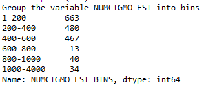

Graphing individual variables
The solution to lab03 is available here:
Descriptive Statistics
The first task is to write the code necessary to run frequency distributions for each of these variables, including both counts and percentages. You have done this previously using the value_counts function.
- write this code now.
Also of interest would be the mean, median and standard deviation for both variables.
- write this code now.
You also write individual code commands for each statistical measure:
print('mean')
mean1 = subset2['NUMCIGMO_EST'].mean()
print(mean1)
print('std deviation')
std1 = subset2['NUMCIGMO_EST'].std()
print(std1)
print('min')
min1 = subset2['NUMCIGMO_EST'].min()
print(min1)
print('max')
max1 = subset2['NUMCIGMO_EST'].max()
print(max1)
print('median')
median1 = subset2['NUMCIGMO_EST'].median()
print(median1)
print('mode')
mode1 = subset2['NUMCIGMO_EST'].mode()
print(mode1)N.B. in the output from this code you should note that the count is 1,697 rather than the 1706. This is because Python does not include those cases with missing or NaN data in these calculations.
Univariate graphing
You will begin by graphing one variable at a time and then multiple variables within the graphs.
Bar charts are most commonly used to examine the distribution of individual variables.
This bar chart shows the distribution for the random sample of 1,200 college students who are asked, what is your perception of your body?
In this chart X or the horizontal axis includes the three response categories: underweight, overweight, and about right.
The height of each bar is measured on the Y or vertical axis, as the number or count of college students giving each response.
This next bar chart shows the same data but as a percentage of the total sample.
The data we are going to visualise is from the NESARC data set. Variable TAB12MDX, representing diagnosis of nicotine dependence in the past 12 months. Along with the secondary variable you created in lab6 NUMCIGMO_EST, representing an estimate of the average number of cigarettes smoked per month.
In order to visualise in Python we need to import additional libraries into our program.
import seaborn
import matplotlib.pyplot as plotPython code will generate the graphs that help us learn more about the data and to make decisions about next steps in our research. The focus to start with is basic visualisations rather than polished, presentation ready graphs.
Categorical variables can be visualised one at a time using univariate graphs, that is with single variable bar charts.
So that categorical variables are ordered properly on the horizontal X axis, you must convert your categorical variables which are often formatted as numerical variables into a format Python recognises as categorical.
subset2['TAB12MDX'] = subset2['TAB12MDX'].astype('category')The astype function converts TAB12MDX to a categorical variable, keeping the original name as is.
The basic code for a univariate graph of a categorical variable is as follows:
seaborn.countplot(x='TAB12MDX',data=subset2)
plt.xlabel('Nicotine Dependence past 12 months')
plt.title('Nicotine Dependence in the past 12 months among young adult smokers in the Nesarc study')The countplot function we name the categorical variable for the X axis and define the data frame, which in our case is subset2. With the xlabel function we can label the X axis and with the title function we provide the bar chart with a title.
Save and run this code.
This bar chart show the 896 young adult smokers with nicotine dependence, as indicated by a response code of 1, and the 810 without nicotine dependence, indicated by a 0.
Univariate Histogram for quantitative variable:
The estimated number of cigarettes smoked per month is the variable NUMCIGMO_EST. This is a quantitative variable so the syntax we use is different.
seaborn.distplot(subset2['NUMCIGMO_EST'].dropna(),kde=False)
plt.xlabel('Number of cigarettes per month')
plt.title('Estimated number of cigarettes per month among young adult smokers in the Nesarc study')With the distribution plot function or distplot we name the quantitative variable for the X axis.
Exercises:
Write the code necessary to group the NUMCIGMO_EST variable into bins and count the frequency within each bin.

Next plot the new categorical variable on a bar chart as below:
What do you think happens if you use the describe() function on the categorical variable TAB12MDX? Try it and see what the output is.
You will notice that charts that are produced "inline" in the iPython console window. It can be beneficial to set the charts to open in a separate window. Go to tools-preferences-ipython console- Graphics and set the Graphics backend to Automatic. Then restart the kernel by pressing Ctrl + . when in the console. When you run your code the graph will show in a separate window.
There seems to be an issue though with multiple graphs that each one overlays the previous. So for your CA I would therefore run each seaborn.countplot() separately and save each graph as an image to place in your CA report.
Graphing categorical response variables
Our research question is Does the number of cigarettes smoked per month determine Nicotine Dependence?
- The first question to ask is what type is the response variable?
Is it Categorical or Numerical?
In this case the response or dependent variable is Nicotine Dependence which is categorical.
Next we need to determine how many categories are in this response variable.
Nicotine Dependence is coded 1 for yes, 0 for no, we have two categories.
- The next question is what type is the explanatory variable?
The explanatory variable is the number of cigarettes smoked per month (NUMCIGMO_EST), this is a quantitative variable.
Placing a quantitative explanatory variable on the Y axis is not visually meaningful where our response variable is categorical (X axis). We would prefer to have categorical on the Y axis.
Therefore we must bin our explanatory variable into groups in order to visualise the relationship we are interested in. This requires some data management that will allow us to construct a categorical to categorical bar chart.
By default the Pandas library displays an abbreviated list of rows and columns from our data frame. We can add additional set option statements following the library import statement that requests a display of the max number of rows and columns.
#set PANDAS to show all columns in Data frame
pandas.set_option('display.max_columns', None)
#set PANDAS to show all rows in Data frame
pandas.set_option('display.max_rows', None)Having viewed the full output for NUMCIGMO_EST we can use the cut function to group individuals in various ways. For example into quartiles or into custom groups.
In this case it makes sense to group based on quantities. Cigarette packs contain 20 cigarettes each. We can create a new variable that estimates the number of packs that each individual smokes per month, rather than the number of cigarettes.
The new variable is called PACKSPERMONTH and is equal to the variable NUMCIGMO_EST divided by 20.
subset2['PACKSPERMONTH'] = subset2['NUMCIGMO_EST'] / 20
c5 = subset2.groupby('PACKSPERMONTH').size()
print(c5)Packs per month is still a quantitative variable, but now we can more easily create groups based on number of packs smoked in a month.
After examining the frequency distribution, we will create groups that include those who've smoked 1-5 packs per month, 11-20, 21-30 and 30+ packs per month.
subset2['PACKCATEGORY'] = pandas.cut(subset2.PACKSPERMONTH, [0,5,10,20,30,147])
#change format of variable from numerical to Categorical
subset2['PACKCATEGORY'] = subset2['PACKCATEGORY'].astype('category')
print('describe nicotine dependence')
desc3 = subset2.groupby('PACKCATEGORY').size()
print(desc3)Now we can make a category to category bar chart.
#bivariate bar chart
seaborn.factorplot(x='PACKCATEGORY',y='TAB12MDX',data=subset2, kind='bar',ci=None)
plt.xlabel('Packs per month')
plt.ylabel('Proportion Nicotine Dependence')Take a look at this chart and see if you understand the Nicotine Dependence variable.
In this case we know the response variable (TAB12MDX) is categorical, the factorplot function by default calculates the mean where the response variable (Y axis) is categorical. this means it shows the proportion of individuals with nicotine dependence. This is because our variable stores either 1 or 0 so if all the 1's are added up and divided by the count then it gives the proportion. We know that Python will not calculate a mean if a variable is set to category. We need to change the TAB12MDX to be numeric. This needs to be done prior to creating the bar chart. (you may already have a conversion written in your code from an earlier lab, if not here is the code below:)
subset2['TAB12MDX'] = pandas.to_numeric(subset2['TAB12MDX'],errors='ignore')If we interpret the chart we can see that those individuals who smoke 1-5 packs a month only 25% of them are nicotine dependent. It is clear from the bar chart that the greater the number of packs smoked per month the higher the percentage of individuals that are classed as nicotine dependent.
A relationship may exist between smoking and nicotine dependence as hypothesized.
N.B if our explanatory variable (PACKSPERMONTH) was already categorical we could of skipped the step to cut() and created the factorplot.
If the response variable had more than two categories what would we need to do? We would need to collapse it into two categories. This is done in the next step.
Bivariate graph with response variable containing more than 2 categories.
If we modify our research question to look at the association between ethnicity and smoking stage.
We will create a response variable that categorises young adult smokers into three groups, Non-daily smokers, Daily smokers, and those with Nicotine Dependence.
In the code book the variable ETHRACE2A shows the categories and frequencies.
To create the new variable called SMOKEGRP we will enter the following code:
def SMOKEGRP (row):
if row['TAB12MDX'] == 1:
return 1
elif row['USFREQMO'] == 30:
return 2
else
return 3
subset2['SMOKEGRP'] = subset2.apply(lambda row: SMOKEGRP (row), axis=1)The SMOKEGRP variable will hold 1 if the individual is nicotine dependent, 2 if they are a daily smoker and 3 for all other young adult smokers.
It is important to consider what categories you need to define and in what order to define them.
Lets see the percentage for each category:
c8=subset2['SMOKEGRP'].value_counts(normalize=True)
print(c8)Now create a univariate bar chart for this new variable.

Now to investigate this variable with another we need to collapse it into two categories.
Two perfectly reasonable options are:
Examine the association between ethnicity and daily versus non-daily smokers.
Or
Examine the association between ethnicity and nicotine dependent versus non-nicotine dependent individuals.
In either case, data management has to occur first.
To collapse the variable into daily and non-daily smokers we use the following:
def DAILY (row):
if row['USFREQMO'] == 30:
return 1
elif row['USFREQMO'] != 30:
return 0
subset2['DAILY'] = subset2.apply(lambda row: DAILY (row), axis=1)
c7= subset2.groupby('DAILY').size()
print(c7)This shows us that 1320 young adult are daily smokers and 386 are not daily smokers.
Now we can graph the relationship between our categorical explanatory variable ETHRACE2A and this new response categorical variable DAILY.
Remember our categorical response variable cannot have more than two categories or levels. Those categories should be coded as zero or one. Zero representing negative and one representing yes or positive. In this format the mean calculated for the y axis gives us the proportion of the positive observations.
seaborn.factorplot(x='ETHRACE2A', y='DAILY', data=subset2, kind='bar', ci=None)
plt.xlabel('Ethnic Group')
plt.ylabel('Proportion Daily Smokers')Notice that the categories (1,2,3,4,5) are not ordered on the X axis, and because they are not labeled it is harder to interpret the bar chart.
We can rename categorical variable values for graphing, first by changing then format to categorical if you haven't already done so. Second by giving the variable ETHRACE2A new value labels using cat.rename_categories()
subset2['ETHRACE2A'] = subset2['ETHRACE2A'].astype('category')
subset2['ETHRACE2A'] = subset2['ETHRACE2A'].cat.rename_categories(['White','Black','NatAm','Asian,'Hispanic'])We can see that the proportion of smokers for Native American's and Hispanic's is somewhat lower than other Ethnic races.
continuous assessment
Apply what you have learned to your continuous assessment work.